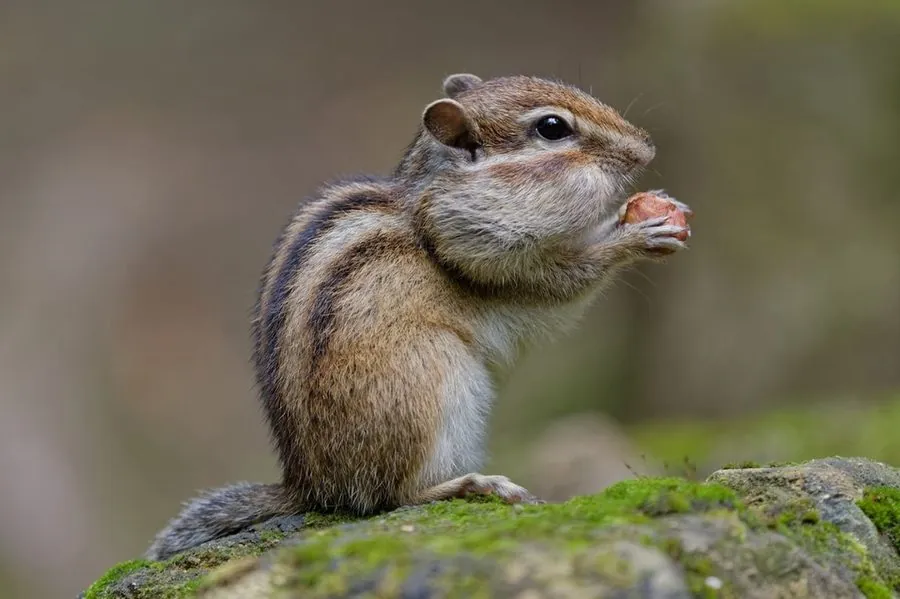

哺乳动物 · 动物界
花鼠 Eutamias sibiricus

亚洲东北部的松鼠科小兽，背上有五条深色纵纹、两颊有发达的颊囊，能一次塞入大量种子，冬季冬眠。
- 分类
- 门脊索动物门纲哺乳纲目啮齿目科松鼠科属花鼠属
- 栖息环境
- 针叶林、混交林、林缘灌丛与山地
- 地理分布
- 俄罗斯西伯利亚、蒙古、中国东北和华北、朝鲜半岛及日本北海道
- 保护级别
- IUCN 无危（LC）
物种志
花鼠体长 12–17 厘米，尾长 8–12 厘米，体重 70–120 克。它的背部呈黄褐色，沿背脊有五条深褐色纵纹，两侧纵纹间为浅色；两颊有发达的颊囊，可以鼓得很大；尾巴较长、毛蓬松，四肢短小。
花鼠分布于俄罗斯西伯利亚、蒙古、中国东北和华北、朝鲜半岛及日本北海道，栖息在针叶林、混交林和林缘灌丛。它白天活动，以种子、坚果、浆果、嫩芽和昆虫为食，秋季用颊囊把种子运回洞穴贮藏，冬季进入冬眠。花鼠善攀爬，也常在地面活动，遇到危险会发出尖叫声并躲入洞穴。雌性妊娠期约 30 天，每胎 4–6 仔，寿命约 5–8 年。目前花鼠被列为无危。
形态与习性
- 食性种子、坚果、浆果、嫩芽与昆虫
- 体长12–17 cm，尾长 8–12 cm
- 体重70–120 g
- 寿命约 5–8 年
- 繁殖妊娠约 30 天，每胎 4–6 仔
- 特征背部五条深色纵纹，有颊囊
趣味知识
- 花鼠背部有五条深色纵纹，是识别它的显著标志。
- 它用颊囊把种子塞入口中，一次能搬运很多食物。
- 花鼠秋季储藏种子，冬季在洞穴中冬眠。